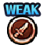

신세계 난이도 패턴
신세계 난이도 패턴
[지] VS 파시피스타 마크 Ⅲ
Stage 1:
선제 행동:

VS 효과의 게이지를 5 단축

슈퍼 체인지 효과를 5 단축

필살기 턴을 5턴 단축

도주
Stage 3:
초기 상태: 파시피스타 마크 Ⅲ
약점 타입: 격투형
선제 행동:

98턴 동안 일반 공격 이외의 데미지 1

98턴 동안 지연 무효

6턴 동안 받는 데미지를 90% 감소
3턴 동안 슬롯 배리어([고기] 슬롯 2회)
[지] VS Dr. 베가펑크 ‘아틀라스’
Stage 1:
선제 행동:
격투형, 참격형, 자유형 캐릭터의 VS 효과의 게이지를 5 단축
격투형, 참격형, 자유형 캐릭터의 슈퍼 체인지 효과를 5 단축
격투형, 참격형, 자유형 캐릭터의 필살기 턴을 5턴 단축
도주
Stage 3:
초기 상태: Dr. 베가펑크 ‘아틀라스’
약점 타입: 참격형
선제 행동:

6턴 동안 체인 계수가 2.75 이하일 경우 공격력 90% 감소
98턴 동안 일반 공격 이외의 데미지 1
98턴 동안 지연 무효

6턴 동안 남은 체력 1로 버티기 효과

2턴 동안 대상의 상태 이상 중, 특정 상태 이상 턴이 2턴 감소(대상의 상태 이상: 체인 계수 상승(증가), 체인 계수 상승(가산), 체인 계수 고정)
[기] VS 상디
Stage 1:
선제 행동:
힘 속성, 속 속성, 심 속성 속성의 VS 효과의 게이지를 5 단축
힘 속성, 속 속성, 심 속성 속성의 슈퍼 체인지 효과를 5 단축
힘 속성, 속 속성, 심 속성 캐릭터의 필살기 턴을 5턴 단축
도주
Stage 3:
초기 상태: 상디

약점 타입: 박식형

15턴 동안 중간단 필살기 봉쇄

[공백][힘][기][속][심][지][G][고기][연][폭탄] 슬롯을 [마비] 슬롯으로 변환

6턴 동안 상단의 선장효과 무효
98턴 동안 일반 공격 이외의 데미지 1

98턴 동안 방어력 감소 무효
[속] VS 프랑키
Stage 1:
선제 행동:
기 속성, 속 속성, 지 속성 속성의 VS 효과의 게이지를 5 단축
기 속성, 속 속성, 지 속성 속성의 슈퍼 체인지 효과를 5 단축
기 속성, 속 속성, 지 속성 캐릭터의 필살기 턴을 5턴 단축
도주
Stage 3:
초기 상태: 프랑키

약점 타입: 야심형

필살기 턴을 1턴 되돌리기

중간단은(는) 받는 데미지 3배의 기절

6턴 동안 공격력 90% 감소
98턴 동안 일반 공격 이외의 데미지 1
98턴 동안 방어력 감소 무효

7턴 동안 상단, 하단을 마비

1턴 동안 장소를 ‘구역: 적’(으)로 만든다
[기] VS 보니 (보스)
Stage 1:
선제 행동:
야심형, 참격형, 박식형 캐릭터의 VS 효과의 게이지를 5 단축
야심형, 참격형, 박식형 캐릭터의 슈퍼 체인지 효과를 5 단축
야심형, 참격형, 박식형 캐릭터의 필살기 턴을 5턴 단축
도주
Stage 2:
선제 행동:
1턴 동안 체인 계수가 2.5 이하일 경우 공격력 90% 감소

7턴 동안 체인 계수의 초기 수치를 1.1배, 체인 계수의 상한 수치를 1.1배로 고정시킨다
98턴 동안 일반 공격 이외의 데미지 1

98턴 동안 상태이상 무효

7턴 동안 방어력 10000배
2턴 동안 탭 타이밍 배리어(GOOD 3회)
격파 시 행동:

체력을 전부 회복
98턴 동안 일반 공격 이외의 데미지 1

유리 효과 해제
도주
Stage 3:
초기 상태: 쥬얼리 보니
약점 타입: 야심형

[공백][힘][기][속][심][지][G][고기][연][폭탄] 슬롯을 [방해] 슬롯으로 변환

8턴 동안 체인 계수 증가량 0.1배
3턴 동안 체인 계수가 2.75 이하일 경우 공격력 90% 감소

1턴 동안 필살기 사용 횟수 2회 제한
1턴 동안 슬롯 배리어([무지개] 슬롯 2회)
98턴 동안 상태이상 무효
1회까지
유리 효과, 축적치 해제
2턴 동안 일반 공격으로 받는 데미지가 50% 감소
[힘] VS 루피 (난입)
Stage 1:
선제 행동:
야심형, 강인형, 타격형 캐릭터의 VS 효과의 게이지를 5 단축
야심형, 강인형, 타격형 캐릭터의 슈퍼 체인지 효과를 5 단축
야심형, 강인형, 타격형 캐릭터의 필살기 턴을 5턴 단축
도주
Stage 2:
선제 행동:

남은 체력의 70% 비율 데미지
필살기 턴을 2턴 되돌리기

10턴 동안 우측 봉쇄

[공백][힘][기][속][심][지][G][고기][연][폭탄] 슬롯을 [불리] 슬롯으로 변환

5턴 동안 [힘][기][속][심][지] 슬롯을 [불리] 슬롯으로 취급
98턴 동안 상태이상 무효
98턴 동안 일반 공격 이외의 데미지 1
120000 데미지
Stage 3:
초기 상태: 몽키 D. 루피
약점 타입: 야심형
11턴 동안 좌측 봉쇄

6턴 동안 20000 데미지의 화상(PERFECT 공격 시에 화상 데미지를 받음)
98턴 동안 일반 공격 이외의 데미지 1
98턴 동안 상태이상 무효
3턴 동안 장소를 ‘구역: 적’(으)로 만든다

10턴 동안 1000을(를) 넘는 데미지를 90% 감소
특수 끼어들기: 일정 이상 데미지 대폭 감소
1회까지
유리 효과, 축적치 해제

3턴 동안 상단을(를) 랜덤 1명 날려버리기

2턴 동안 받는 데미지 무효
150000 데미지